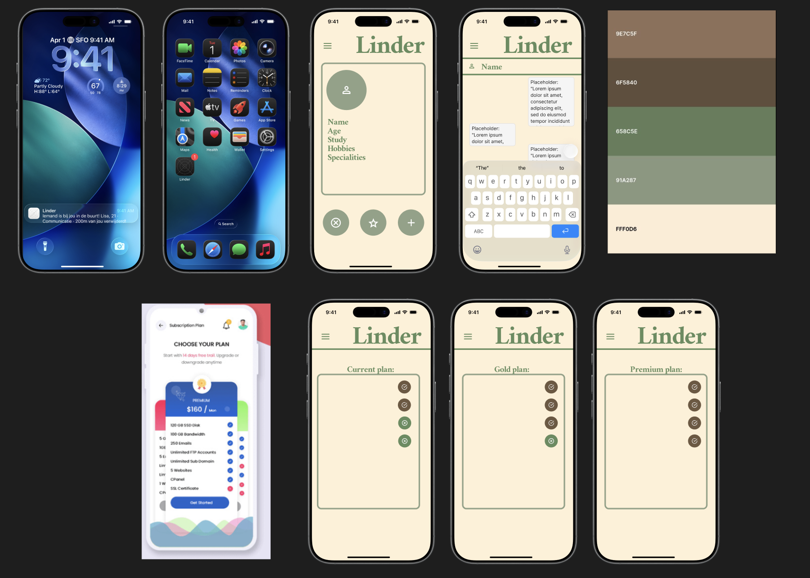
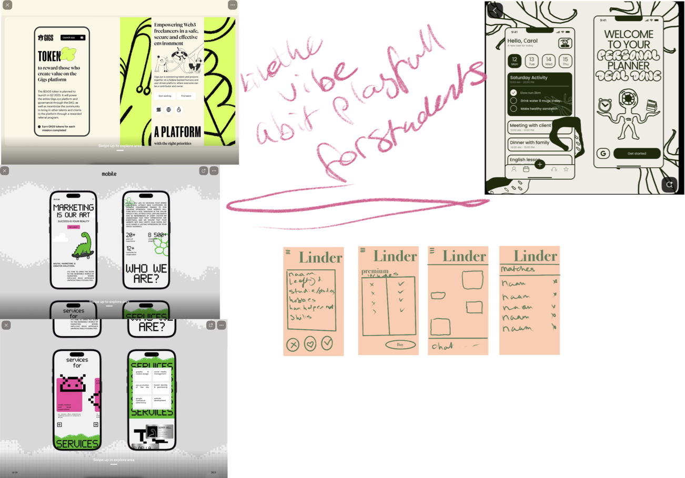
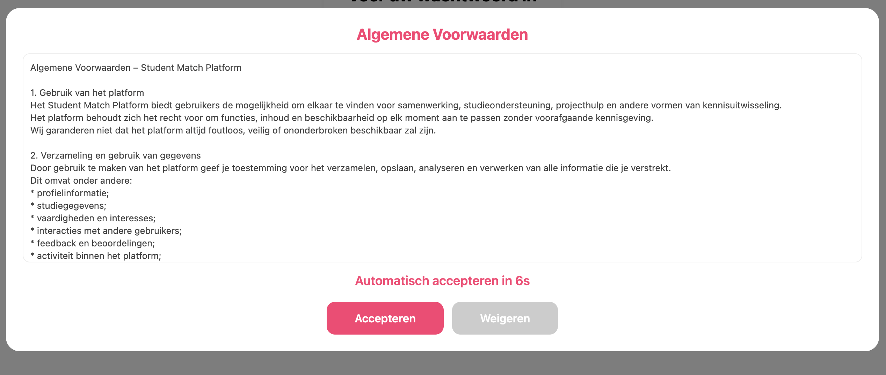
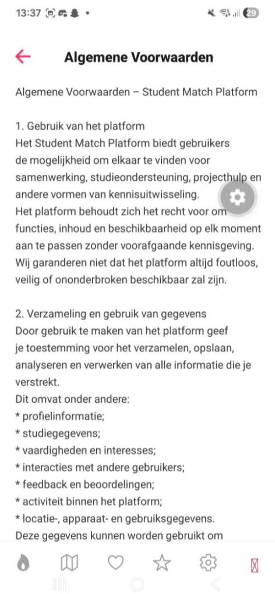
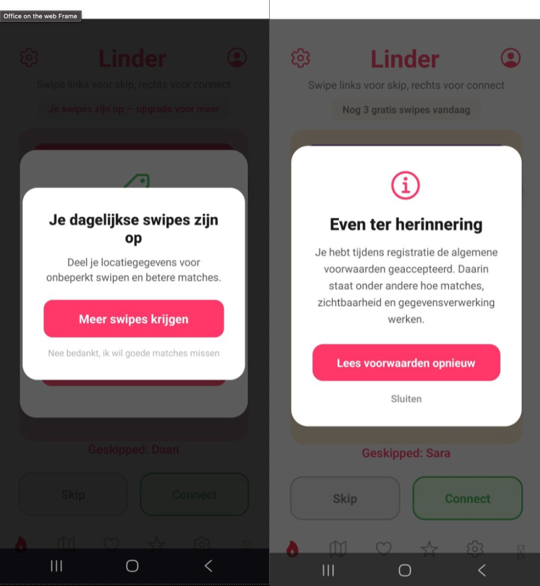
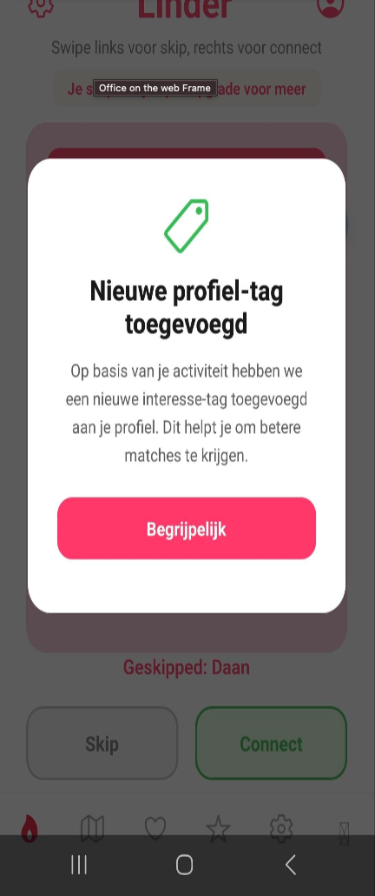

Research and design work from my Dark Tech minor
My contributions to my team's research and design efforts as a creative technologist.
About the Application
During my Dark Tech minor, my team and I developed a prototype application focused on exploring the ethical and social impact of digital technologies. The project investigates how systems can evolve beyond their intended purpose, a phenomenon known as function creep.
The application was designed to visualize privacy risks, user manipulation, and data transparency issues in modern platforms. Through research, interface design, and speculative interaction concepts, we explored how technology can influence user behavior and decision-making over time.
My contribution focused on research, interface design, visual identity, and translating ethical concerns into accessible user experiences. The project combines dark-tech aspects with critical design principles to encourage reflection on the future of digital products.
Research paper: Function creep
Research exploring how features extend beyond their original purpose and the societal risks involved.
Advice report for product owner
Key findings and recommendations for mitigating risks associated with function creep.
Designs
Concept screens and interaction sketches created to support the recommendations.


Pop-ups I made for the application
The pop-ups and Terms of Service I created to showcase function creep for passive and active users.



